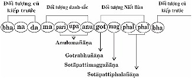

|
Tìm hiểu PHÁP HÀNH THIỀN TUỆ - Tỳ khưu HỘ PHÁP
PHẦN II PHÁP HÀNH (BHĀVANĀ) 12- Trí Tuệ Thiền Tuệ Thứ Mười Hai (Anulomañāṇa) Hành giả tiến hành thiền tuệ, phát triển trí tuệ thiền tuệ đến Thánh Ðạo lộ trình tâm (Maggavīthicitta). Trong lộ trình tâm này có 7 sát na tâm Javanakicca: phận sự tác hành: Sát na tâm thứ nhất, thứ nhì, thứ ba, gồm 3 sát na tâm đầu trong 7 tác hành tâm (javanacitta), là trí tuệ thứ 12 gọi là Anulomañāṇa: Trí tuệ thiền tuệ thuận dòng theo 8 trí tuệ thiền tuệ phần trước và thuận dòng theo 37 pháp chứng đắc Thánh Ðạo [2] phần sau. Trí tuệ thiền tuệ thứ mười hai này phát sanh là do nhờ trí tuệ thứ nhất cho đến trí tuệ thiền tuệ thứ mười một, làm nhân duyên, làm nền tảng. Trí tuệ thiền tuệ này thuận dòng đến sự chứng ngộ chân lý Tứ thánh đế. 1- Trí tuệ thiền tuệ Anulomañāṇa: Thuận dòng Trí tuệ thiền tuệ thứ mười hai Anulomañāṇa này, thuận dòng theo 8 trí tuệ thiền tuệ phần trước, vì có chung một phận sự, thấy rõ, biết rõ sự sanh, sự diệt của danh pháp, sắc pháp; thấy rõ, biết rõ 3 trạng thái chung: trạng thái vô thường, hoặc trạng thái khổ, hoặc trạng thái vô ngã, theo dòng phát triển trí tuệ thiền tuệ tuần tự như sau:
Ðến trí tuệ thiền tuệ thứ mười hai Anulomañāṇa, là trí tuệ thiền tuệ thuận dòng theo 8 trí tuệ thiền tuệ phần trước, vì cùng chung một phận sự, một mục đích giải thoát khỏi danh pháp, sắc pháp. 2- Trí tuệ thiền tuệ Anulomañāṇa: thuận dòng theo 37 pháp chứng đắc Thánh Ðạo, phần sau Trí tuệ thiền tuệ thứ mười hai Anulomañāṇa, là trí tuệ thiền tuệ phát sanh trong Thánh Ðạo lộ trình tâm (Maggavīthicitta), chắc chắn sắp chứng ngộ chân lý Tứ thánh đế, có Niết Bàn làm đối tượng, chứng đắc Thánh Ðạo, Thánh Quả thuộc về siêu tam giới tâm, nơi hội tụ đầy đủ 37 pháp chứng đắc Thánh Ðạo ở trong 4 Thánh Ðạo Tâm. Do đó, trí tuệ thiền tuệ Anulomañāṇa này thuận dòng theo 37 pháp chứng đắc Thánh Ðạo (4 pháp niệm xứ, 4 pháp tinh tấn, 4 pháp thành tựu, 5 pháp chủ, 5 pháp lực, 7 pháp giác chi, 8 pháp chánh đạo) phần sau, để chứng ngộ chân lý Tứ thánh đế, chứng đắc 4 Thánh Ðạo, 4 Thánh Quả và Niết Bàn. Ðồ biểu Nhập Lưu Thánh Ðạo lộ trình tâm (Maggavīthicitta)  Giải thích Thánh Ðạo lộ trình tâm
Xem đồ biểu Thánh Ðạo lộ trình tâm, thấy rõ vị trí của trí tuệ thiền tuệ thứ mười hai Anulomañāṇa, chỉ có 3 sát na tâm đầu (có khi chỉ còn 2 sát na tâm, trừ sát na tâm parikamma) làm phận sự Anulomañāṇa, có một trong 3 trạng thái chung: trạng thái vô thường, hoặc trạng thái khổ, hoặc trạng thái vô ngã của danh pháp, sắc pháp làm đối tượng, để cho trí tuệ thiền tuệ Anulomañāṇa làm phận sự như sau:
Như vậy trí tuệ thiền tuệ thứ 12 Anulomañāṇa này, là trí tuệ thiền tuệ tột cùng của trí tuệ thiền tuệ thuộc tam giới (lokiyavipassanā). Và còn gọi là Saccānulomañāṇa: Trí tuệ thiền tuệ thuận dòng theo sự chứng ngộ chân lý Tứ thánh đế. 3- Trí tuệ thiền tuệ thuộc Paṭipadāñāṇadassanavisuddhi Chín loại trí tuệ thiền tuệ thuộc về Paṭipadāñāṇadassana-visuddhi: Pháp hành tri kiến thanh tịnh như sau__
Chín trí tuệ thiền tuệ này còn trong lãnh vực trí tuệ thiền tuệ tam giới (lokiyavipassanā), thuộc về Pháp hành tri kiến thanh tịnh (Paṭipadāñāṇadassanaisuddhi), là thanh tịnh thứ 4 trong phần trí tuệ thiền tuệ, và là thanh tịnh thứ 6 trong 7 pháp thanh tịnh. Trí tuệ thiền tuệ thứ 12 làm nhân duyên phát sanh trí tuệ thiền tuệ thứ 13. 13- Trí Tuệ Thiền Tuệ Thứ Mười Ba (Gotrabhuñāṇa) Theo thứ tự Thánh Ðạo lộ trình tâm, 3 sát na đầu thuộc về trí tuệ thiền tuệ thứ 12 Anulomañāṇa, đến sát na tâm thứ tư là trí tuệ thiền tuệ thứ 13 gọi là Gotrabhuñāṇa: Trí tuệ thiền tuệ chuyển từ dòng phàm nhân sang dòng bậc Thánh nhân, thấy rõ Niết Bàn làm đối tượng. Trí tuệ thiền tuệ thứ 13 Gotrabhuñāṇa này chỉ có 1 sát na tâm, mặc dầu tâm còn là dục giới thiện tâm hợp với trí tuệ, nhưng có khả năng đặc biệt như sau:
Ví dụ: Một người nhận thấy bên bờ sông này đầy những nguy hiểm, muốn nhảy sang bờ bên kia cho được an toàn. Người ấy dùng một cây sào dài, chạy hết tốc lực từ xa đến bờ sông bên này, hai tay chống cây sào dài, tung người lên cao, lao thân qua bờ sông bên kia, rồi buông sào rơi xuống, đứng dậy vẫn còn bỡ ngỡ. Cũng như hành giả nhận thấy trong ba giới: dục giới, sắc giới, vô sắc giới; bốn loài: thai sanh, noãn sanh, thấp sanh, hóa sanh đầy những cảnh khổ sanh, khổ lão, khổ bệnh, khổ tử,... cũng như người kia nhận thấy bờ sông bên này đầy nguy hiểm. Hành giả mong muốn chứng ngộ Niết Bàn, pháp giải thoát khỏi mọi cảnh khổ sanh, khổ lão, khổ bệnh, khổ tử,... cũng như người kia muốn nhảy sang bờ sông bên kia an toàn. Trí tuệ thiền tuệ thứ 13 Gotrabhuñāṇa buông bỏ đối tượng danh pháp, sắc pháp, tiếp nhận Niết Bàn làm đối tượng, vì thấy rõ, biết rõ Niết Bàn là nơi an lạc tuyệt đối, cũng như người kia dùng cây sào làm phương tiện để chống tung người lên cao, lao mình sang bờ sông bên kia an toàn. Trí tuệ thiền tuệ thứ 13 Gotrabhuñāṇa tuy có Niết Bàn làm đối tượng, nhưng chưa có khả năng diệt đoạn tuyệt được tham ái, phiền não, là vì còn mới, chưa có nhân duyên hỗ trợ, nên chỉ làm duyên hỗ trợ cho Thánh Ðạo Tâm phát sanh, cũng như người kia vừa buông sào rơi xuống bờ sông bên kia mới lạ, còn đang bỡ ngỡ. Sự giống nhau và khác nhau giữa trí tuệ thiền tuệ Anulomañāṇa và Gotrabhuñāṇa
Trí tuệ thiền tuệ dẫn đến pháp giải thoát khổ Trí tuệ thiền tuệ dẫn đến giải thoát khỏi danh pháp, sắc pháp, hay gọi trí tuệ thiền tuệ tam giới tột đỉnh (vuṭṭhānagāminīvipassanā) có 2 trí tuệ thiền tuệ là:
Hai trí tuệ thiền tuệ này đạt đến đỉnh cao nhất của trí tuệ thiền tuệ tam giới, dẫn đến giải thoát khỏi danh pháp, sắc pháp, nên gọi là vuṭṭhānagāminīvipassanāñāṇa: Trí tuệ thiền tuệ dẫn đến giải thoát khỏi danh pháp, sắc pháp, để chứng đắc 4 Thánh Ðạo, 4 Thánh Quả. Sự khác nhau về đối tượng giải thoát Những hành giả tiến hành thiền tuệ, đối tượng giải thoát cuối cùng khỏi danh pháp, sắc pháp có thể khác nhau, tùy theo căn duyên đã tạo nhiều đời nhiều kiếp trong quá khứ và kiếp hiện tại này, như__
Như vậy, trí tuệ thiền tuệ chứng đắc Thánh Ðạo, Thánh Quả giống nhau, nhưng đối tượng của thiền tuệ có thể khác nhau, tùy theo căn duyên của mỗi hành giả. Trí tuệ thiền tuệ thứ 13 làm nhân duyên phát sanh trí tuệ thiền tuệ siêu tam giới thứ 14. 14- Trí Tuệ Thiền Tuệ Siêu Tam Giới Thứ Mười Bốn (Maggañāṇa) Theo thứ tự Thánh Ðạo lộ trình tâm (Maggavīthicitta) có 3 sát na tâm đầu, gọi là trí tuệ thiền tuệ: Anulomañāṇa, đến sát na tâm thứ tư gọi là Gotrabhuñāṇa, đến sát na tâm thứ năm là trí tuệ thiền tuệ siêu tam giới thứ 14, gọi là Maggañāṇa: Thánh Ðạo Tuệ, thuộc về trí tuệ thiền tuệ siêu tam giới, vì có Niết Bàn làm đối tượng. Thánh Ðạo Tuệ là trí tuệ đồng sanh với Thánh Ðạo Tâm, dầu chỉ có một sát na tâm phát sanh, song có một năng lực siêu việt, có thể diệt đoạn tuyệt được tham ái, phiền não, ác pháp tùy theo khả năng của mỗi Thánh Ðạo Tuệ. Nhập Lưu Thánh Ðạo Tuệ (Sotāpattimaggañāṇa) đồng sanh với Nhập Lưu Thánh Ðạo Tâm phát sanh lên lần đầu tiên của mỗi một chúng sinh, trong vòng tử sanh luân hồi trong tam giới từ vô thủy, không sao kể xiết được, cho đến kiếp hiện tại này. 1- Khả năng của Nhập Lưu Thánh Ðạo Tuệ Nhập Lưu Thánh Ðạo Tuệ có khả năng đặc biệt, diệt đoạn tuyệt (samucchedapahāna) được tham ái, tà kiến đồng sanh với 4 tham tâm hợp tà kiến và hoài nghi đồng sanh với si tâm hợp hoài nghi. Tà kiến và hoài nghi đã bị diệt đoạn tuyệt bằng Nhập Lưu Thánh Ðạo Tuệ rồi, vĩnh viễn trong kiếp hiện tại này và kiếp sau, hay bất cứ kiếp nào nữa cũng không bao giờ có tà kiến và hoài nghi. Ngoài ra, những ác pháp nào liên quan đến tà kiến và hoài nghi cũng bị diệt đoạn tuyệt cùng một lúc.
2- Sự khác nhau giữa trí tuệ thiền tuệ Gotrabhuñāṇa và Maggāñāṇa trí tuệ thiền tuệ siêu tam giới Gotrabhuñāṇa là trí tuệ đồng sanh với dục giới đại thiện tâm hợp trí tuệ, song có khả năng đặc biệt tiếp nhận Niết Bàn làm đối tượng. - Trí tuệ thiền tuệ Gotrabhuñāṇa chỉ có thể thoát khỏi được đối tượng danh pháp, sắc pháp tiếp nhận Niết Bàn làm đối tượng, nhưng chủ thể vẫn còn là dục giới đại thiện tâm hợp trí tuệ, nên gọi là ekato vuṭṭhāna: Thoát khỏi được một phần đối tượng danh pháp, sắc pháp, tiếp nhận Niết Bàn làm đối tượng. - Trí tuệ thiền tuệ siêu tam giới Thánh Ðạo Tuệ (Maggañāṇa), là trí tuệ đồng sanh với Thánh Ðạo Tâm thuộc siêu tam giới tâm, có Niết Bàn làm đối tượng. Trí tuệ thiền tuệ siêu tam giới Thánh Ðạo Tuệ thoát khỏi được cả đối tượng và chủ thể tam giới, nên gọi là dubhatovuṭṭhāna: Thoát khỏi được cả 2 phần: * Phần đối tượng: thoát khỏi danh pháp, sắc pháp thuộc tam giới, tiếp nhận Niết Bàn làm đối tượng. * Phần chủ thể: thoát khỏi dục giới đại thiện tâm, thay bằng siêu tam giới thiện tâm, có Niết Bàn làm đối tượng. Pahānapariññā: Trí tuệ có khả năng diệt phiền não, gồm có 10 loại trí tuệ thiền tuệ, bắt đầu từ trí tuệ thiền tuệ thứ 5 gọi là Bhaṅgānupassanāñāṇa cho đến trí tuệ thiền tuệ siêu tam giới thứ 14 gọi là Maggañāṇa. Trí tuệ thiền tuệ thứ 14 làm nhân duyên phát sanh trí tuệ thiền tuệ thứ 15. 15- Trí Tuệ Thiền Tuệ Siêu Tam Giới Thứ Mười Lăm (Phalañāṇa) Theo thứ tự Thánh Ðạo lộ trình tâm (Maggavīthicitta) có 3 sát na tâm đầu, gọi là trí tuệ thiền tuệ: Anulomañāṇa, đến sát na tâm thứ tư gọi là Gotrabhuñāṇa, đến sát na tâm thứ năm gọi là Maggañāṇa: Thánh Ðạo Tuệ, đến sát na tâm thứ sáu và thứ bảy là trí tuệ thiền thứ 15, gọi là Phalañāṇa: Thánh Quả Tuệ thuộc về trí tuệ thiền tuệ siêu tam giới, vì có Niết Bàn làm đối tượng. Thánh Quả Tuệ là trí tuệ đồng sanh với Thánh Quả Tâm, có 2 sát na tâm (có thể có 3 sát na tâm) là quả trực tiếp của Thánh Ðạo Tâm. Nhập Lưu Thánh Quả Tuệ là trí tuệ đồng sanh với Nhập Lưu Thánh Quả Tâm, là quả trực tiếp của Nhập Lưu Thánh Ðạo Tâm cho quả không có thời gian ngăn cách gọi là "akāliko". Nghĩa là khi chứng đắc Thánh Ðạo, liền chứng đắc Thánh Quả ngay sau một sát na tâm. Nhập Lưu Thánh Quả Tâm là bậc Thánh thứ nhì trong 8 bậc Thánh trong Phật giáo, phát sanh 2 sát na tâm (có thể có 3 sát na tâm) rồi diệt, chấm dứt Thánh Ðạo lộ trình tâm. Hành giả đã trở thành bậc Thánh Nhập Lưu (Sotāpanna), là bậc Thánh nhân thứ nhất trong 4 bậc Thánh nhân của Phật giáo. Thánh Ðạo Tuệ và Thánh Quả Tuệ - Thánh Ðạo Tuệ là trí tuệ đồng sanh với Thánh Ðạo Tâm, thuộc siêu tam giới thiện tâm, có Niết Bàn làm đối tượng. Trong Thánh Ðạo lộ trình tâm, Thánh Ðạo Tâm phát sanh một sát na tâm, chỉ một lần duy nhất. - Thánh Quả Tuệ là trí tuệ đồng sanh với Thánh Quả Tâm, thuộc siêu tam giới quả tâm, có Niết Bàn làm đối tượng. Trong Thánh Ðạo lộ trình tâm, Thánh Quả Tuệ có thể phát sanh 2 - 3 sát na tâm; và ngoài Thánh Ðạo lộ trình tâm ra, Thánh Quả Ðịnh lộ trình tâm (phalasamāpattivīthicitta) Thánh Quả Tâm có thể phát sanh liên tục nhiều vô số trong suốt thời gian nhập Thánh Quả Ðịnh Như vậy, Thánh Ðạo Tâm và Thánh Quả Tâm giống nhau về đối tượng Niết Bàn, nhưng khác nhau về loại siêu tam giới tâm, và Thánh Ðạo Tâm chỉ có 1 sát na tâm, còn Thánh Quả Tâm có nhiều sát na tâm sanh diệt liên tục khi nhập Thánh Quả Ðịnh. Trí tuệ thiền tuệ thứ 15 làm nhân duyên phát sanh trí tuệ thiền tuệ thứ 16. 16- Trí Tuệ Thứ Mười Sáu (Paccavekkhanañāṇa) Sau Nhập Lưu Thánh Ðạo lộ trình tâm chấm dứt, hành giả đã trở thành bậc Thánh Nhập Lưu (Sotāpanna), tiếp theo trí tuệ thứ mười sáu gọi là: Paccavekkhanañāṇa: Trí tuệ quán xét gồm có những lộ trình tâm phát sanh; mỗi lộ trình tuần tự làm mỗi phận sự quán xét: Năm điều quán xét:
Bậc Thánh Nhập Lưu có trí tuệ quán xét 5 điều trên. Cũng như vậy, bậc Thánh Nhất Lai và bậc Thánh Bất Lai cũng có trí tuệ quán xét 5 điều ấy. Nhưng mỗi bậc Thánh nhân chỉ có khác nhau về đối tượng: Thánh Ðạo, Thánh Quả, Niết Bàn, phiền não nào đã bị diệt đoạn tuyệt rồi và phiền não nào chưa diệt được. Riêng bậc Thánh Arahán, thì chỉ có trí tuệ quán xét 4 điều là:
Như vậy, trí tuệ quán xét của bốn bậc Thánh nhân gồm có 19 điều. Riêng về bậc Thánh Hữu Học (Sekkhapuggala) trường hợp trí tuệ quán xét phiền não nào đã bị diệt đoạn tuyệt rồi và trí tuệ quán xét phiền não nào chưa diệt đoạn tuyệt được. Có số vị có đủ 2 điều này, có số vị không có đủ 2 điều này. Bậc Thánh Nhân (Ariyapuggala) Trong Phật giáo có 4 bậc Thánh nhân là kết quả của sự tiến hành thiền tuệ đúng theo Pháp hành Trung đạo. Hành giả tiến hành thiền tuệ được phát sanh trí tuệ thiền tuệ theo tuần tự bắt đầu từ trí tuệ thứ nhất cho đến trí tuệ thứ 16; cứ mỗi lần trải qua 16 trí tuệ thiền tuệ là 1 lần chứng đắc Thánh Ðạo, Thánh Quả trở thành bậc Thánh nhân. Như vậy, hành giả tiến hành thiền tuệ trí tuệ phát sanh tuần tự trải qua 16 loại trí tuệ thiền tuệ trải qua 4 lần:
1- Bậc Thánh nhân thứ nhất: bậc Thánh Nhập Lưu (Sotāpanna) có 3 hạng:
2- Bậc Thánh nhân thứ nhì: bậc Thánh Nhất Lai (Sakadāgāmī) Bậc Thánh Nhập Lưu muốn trở thành bậc Thánh Nhất Lai (Sakadāgāmī), cần phải có những điều như sau: 1- Ba pháp hỗ trợ trở thành bậc Thánh Nhất Lai. Hành giả là bậc Thánh Nhập Lưu có đủ ba la mật tiếp tục tiến hành thiền tuệ, bồi bổ 3 pháp: 5 pháp chủ, 5 pháp lực, 7 pháp giác chi có đủ năng lực để hỗ trợ cho sự chứng đắc Nhất Lai Thánh Ðạo, Nhất Lai Thánh Quả. 3 pháp đó là:
2- Phát triển trí tuệ thiền tuệ. Bậc Thánh Nhập Lưu tiếp tục tiến hành thiền tuệ, phát triển trí tuệ thiền tuệ bắt đầu từ trí tuệ thiền tuệ thứ tư Udayabbayā-nupassanāñāṇa: Trí tuệ thiền tuệ thấy rõ, biết rõ sự sanh, sự diệt của danh pháp, sắc pháp, hiện thấy rõ trạng thái vô thường, trạng thái khổ, trạng thái vô ngã của danh pháp, sắc pháp hiện tại và trí tuệ thiền tuệ tiến hóa tuần tự phát sanh:
Hành giả đã trải qua quá trình diễn tiến trí tuệ thiền tuệ theo tuần tự cho đến Nhất Lai Thánh Ðạo lộ trình tâm (Sakadāgāmi-maggavīthicitta) chứng đắc Nhất Lai Thánh Ðạo, Nhất Lai Thánh Quả, trở thành bậc Thánh Nhất Lai (Sakadāgāmī) là bậc Thánh nhân thứ nhì trong Phật giáo. Bậc Thánh Nhất Lai (Sakadāgāmī) chỉ còn tái sanh 1 kiếp nữa mà thôi, tái sanh làm người, hoặc làm chư thiên ở cõi trời dục giới. Ngay trong kiếp ấy, chắc chắn sẽ chứng đắc Arahán Thánh Ðạo, Arahán Thánh Quả trở thành bậc Thánh Arahán, rồi tịch diệt Niết Bàn, chấm dứt sự tử sanh luân hồi trong tam giới. 3- Bậc Thánh nhân thứ ba: bậc Thánh Bất Lai (Anāgāmī) Bậc Thánh Nhất Lai muốn trở thành bậc Thánh Bất Lai (Anāgāmī) cần phải có những điều như sau: 1- Ba pháp hỗ trợ trở thành bậc Thánh Bất Lai. Hành giả là bậc Thánh Nhất Lai có đủ ba la mật tiếp tục tiến hành thiền tuệ, bồi bổ 3 pháp: 5 pháp chủ, 5 pháp lực, 7 pháp giác chi có đủ năng lực để hỗ trợ cho sự chứng đắc Bất Lai Thánh Ðạo, Bất Lai Thánh Quả. 2- Phát triển trí tuệ thiền tuệ. Bậc Thánh Nhất Lai tiếp tục tiến hành thiền tuệ, phát triển trí tuệ thiền tuệ bắt đầu từ trí tuệ thiền tuệ thứ tư Udayabbayā-nupassanāñāṇa: Trí tuệ thiền tuệ thấy rõ, biết rõ sự sanh, sự diệt của danh pháp, sắc pháp, hiện thấy rõ trạng thái vô thường, trạng thái khổ, trạng thái vô ngã của danh pháp, sắc pháp hiện tại và trí tuệ thiền tuệ tiến hóa tuần tự phát sanh:
Hành giả đã trải qua quá trình diễn tiến trí tuệ thiền tuệ theo tuần tự cho đến Bất Lai Thánh Ðạo lộ trình tâm (Anāgāmimagga-vīthicitta), chứng đắc Bất Lai Thánh Ðạo, Bất Lai Thánh Quả trở thành bậc Thánh Bất Lai (Anāgāmī), là bậc Thánh nhân thứ ba trong Phật giáo. Bậc Thánh Bất Lai (Anāgāmī) không còn tái sanh trở lại ở cõi dục giới, chỉ còn tái sanh ở cõi trời sắc giới (hoặc vô sắc giới). Ngay tại cõi trời sắc giới ấy, chắc chắn sẽ chứng đắc Arahán Thánh Ðạo, Arahán Thánh Quả, trở thành bậc Thánh Arahán, rồi tịch diệt Niết Bàn ở cõi trời sắc giới ấy, chấm dứt sự tử sanh luân hồi trong tam giới. 4- Bậc Thánh nhân thứ tư: bậc Thánh Arahán (Arahanta) Bậc Thánh Bất Lai muốn trở thành bậc Thánh Arahán (Arahanta) cần phải có những điều như sau: 1- Ba pháp hỗ trợ trở thành bậc Thánh Arahán. Hành giả là bậc Thánh Bất Lai có đủ ba la mật tiếp tục tiến hành thiền tuệ, bồi bổ 3 pháp: 5 pháp chủ, 5 pháp lực, 7 pháp giác chi có đủ năng lực để hỗ trợ cho sự chứng đắc Arahán Thánh Ðạo, Arahán Thánh Quả. 2- Phát triển trí tuệ thiền tuệ. Bậc Thánh Bất Lai tiếp tục tiến hành thiền tuệ, phát triển trí tuệ thiền tuệ bắt đầu từ trí tuệ thiền tuệ thứ tư Udayabbayā-nupassanāñāṇa: Trí tuệ thiền tuệ thấy rõ, biết rõ sự sanh, sự diệt của danh pháp, sắc pháp, hiện thấy rõ trạng thái vô thường, trạng thái khổ, trạng thái vô ngã của danh pháp, sắc pháp hiện tại và trí tuệ thiền tuệ tiến hóa tuần tự phát sanh:
Hành giả đã trải qua quá trình diễn tiến trí tuệ thiền tuệ theo tuần tự cho đến Arahán Thánh Ðạo lộ trình tâm (Arahattamagga-vīthicitta) đã chứng đắc Arahán Thánh Ðạo, Arahán Thánh Quả, trở thành bậc Thánh Arahán (Arahanta), là bậc Thánh nhân thứ tư trong Phật giáo. Bậc Thánh Arahán (Arahanta), ngay trong kiếp hiện tại, đến khi hết tuổi thọ, đồng thời cùng một lúc tịch diệt Niết Bàn, chấm dứt sự tử sanh luân hồi trong tam giới. Trí Tuệ Thiền Tuệ Thuộc Ñāṇadassanavisuddhi Trí tuệ thiền tuệ thuộc về Ñāṇadassanavisuddhi: Tri kiến thanh tịnh, phải là trí tuệ thiền tuệ siêu tam giới đó là: 4 Thánh Ðạo Tuệ: (Sotāpattimaggañāṇa). 2- Nhất Lai Thánh Ðạo Tuệ (Sakadāgāmimaggañāṇa). 3- Bất Lai Thánh Ðạo Tuệ (Anāgāmimaggañāṇa). 4- Arahán Thánh Ðạo Tuệ (Arahattamaggañāṇa). 4 Thánh Ðạo Tuệ này là trí tuệ thiền tuệ siêu tam giới chứng ngộ Niết Bàn, diệt đoạn tuyệt phiền não, nên đạt đến thanh tịnh gọi là: Ñāṇadassanavisuddhi: Tri kiến thanh tịnh, là thanh tịnh thứ 5 của pháp hành thiền tuệ, và là thanh tịnh thứ 7, thanh tịnh cuối cùng, trong 7 pháp thanh tịnh 4 Thánh Quả Tuệ cũng là trí tuệ thiền tuệ siêu tam giới, nhưng không thuộc về Tri kiến thanh tịnh, vì là 4 Thánh Quả Tuệ là quả trực tiếp của 4 Thánh Ðạo Tuệ. Trí tuệ thiền tuệ Gotrabhuñāṇa: Trí tuệ thiền tuệ chuyển dòng từ phàm nhân sang dòng bậc Thánh nhân, và chuyển dòng từ bậc Thánh nhân bậc thấp, lên dòng bậc Thánh nhân bậc cao. Trí tuệ thiền tuệ Gotrabhuñāṇa chỉ làm phận sự hướng dẫn cho Thánh Ðạo Tâm, nên không thuộc về Pháp hành Tri kiến thanh tịnh, cũng không thuộc về Tri kiến thanh tịnh. [5] Chú thích: [2] 37 Pháp pháp chứng đắc Thánh Đạo: 4 pháp niệm xứ, 4 pháp tinh tấn, 4 pháp thành tựu, 5 pháp chủ, 5 pháp lực, 7 pháp giác chi, 8 pháp chánh đạo. [3] Chánh đạo: chánh kiến, chánh tư duy, chánh ngữ, chánh nghiệp, chánh mạng, chánh tinh tấn, chánh niệm, chánh định. [4] Tà đạo: tà kiến, tà tư duy, tà nghiệp, tà mạng, tà tinh tấn, tà niệm, tà định. [5] Bộ Visuddhimagga, phần Ñāṇadassanavisuddhi. -ooOoo- Ðầu trang
| Mục lục
| 1.1
| 1.2
| 1.3
| 1.4
| 1.5
| 2.1
| 2.2
| 2.3
| 2.4
| 2.5
| 3.1
| 3.2
| 3.3
| 3.4
| 3.5
| |
Chân thành cám ơn Tỳ khưu Hộ Pháp đã gửi tặng bản vi tính (Bình Anson, 05-2003).
[Trở
về trang Thư Mục]
last updated: 30-05-2003